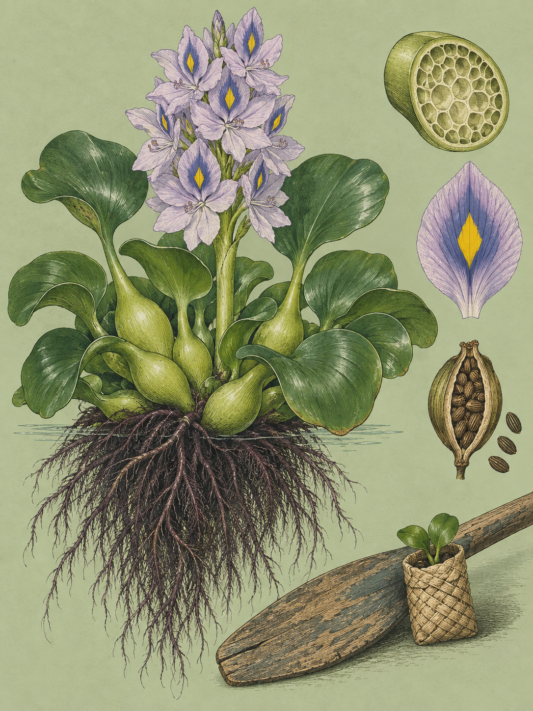

RIFT VALLEY
Pontederia crassipes
Swahili: „Gugu maji“

Die Blüte der Wasserhyazinthe öffnet sich in der Nacht und ist am Nachmittag verwelkt. Acht bis fünfzehn Einzelblüten sitzen dann an einer aufrechten Ähre, blassblau bis lavendelfarben, jede mit sechs Kronblättern von bis zu 4 Zentimetern Länge. Auf dem obersten, mittleren Kronblatt steht ein leuchtend gelber Fleck in Rautenform, umrandet von tiefem Violett. Wer das sehen will, muss früh am Naivashasee sein. Was darunter treibt, hat mehr Zeit. Unter der Blüte sitzt eine Rosette aus dunkelgrünen, glänzenden, fleischigen Blättern, an der Basis herzförmig bis eiförmig oder nierenförmig. Die Spreiten messen 10 bis 20 Zentimeter im Durchmesser; in Gewässern mit extrem hohem Nährstoffangebot werden sie so groß, dass die Literatur sie als tellergroß beschreibt. Die Blattstiele sind 2 bis 5 Zentimeter dick. Unter der Wasserlinie hängt ein dichtes, federartiges Netz aus Faserwurzeln, dunkelviolett bis schwarz, ohne jede Verbindung zum Grund. Bis zu 95 Prozent des Lebendgewichts sind Wasser. Regulär ragt die Pflanze 10 bis 20 Zentimeter über die Oberfläche, in geschlossenen Matten bis 100 Zentimeter, weil die Stiele sich in der Konkurrenz um Licht strecken.
Auf diese Stiele geht der Artname zurück. Crassipes setzt sich aus crassus, dick, und pes, Fuß oder Stiel, zusammen und bedeutet wörtlich „dickstielig“. Carl Friedrich Philipp von Martius beschrieb die Art 1823 nach Material, das er auf seiner Brasilien-Expedition von 1817 bis 1820 im Amazonasbecken gesammelt hatte. Carl Sigismund Kunth stellte sie 1843 in eine neue Gattung Eichhornia, benannt nach Johann Albrecht Friedrich von Eichhorn, von 1840 bis 1848 preußischer Kultusminister, und publizierte sie als Eichhornia speciosa. Hermann zu Solms-Laubach korrigierte das 1883 nach den Regeln der Priorität und stellte das ältere Epitheton wieder her. Über 130 Jahre hielt sich dieser Name. 2018 wiesen Pellegrini, Horn und Almeida anhand plastidärer DNA und morphologischer Merkmale wie Styloid-Kristallen und Samenstrukturen nach, dass Eichhornia polyphyletisch ist. Seither trägt die Art wieder ihren ursprünglichen Namen.
Die Dominanz der Pflanze beruht auf drei Prinzipien, die zusammenwirken. Das erste ist anatomisch. In den bauchigen Blattstielen sitzt Aerenchym, ein schwammartiges Gewebe mit luftgefüllten Kammern. Es trägt die Pflanze samt schwerem Blattwerk und dichtem Wurzelwerk an der Oberfläche. Weil sie damit vom Gewässergrund entkoppelt ist, wirken die breiten Blätter wie Segel, und der Wind treibt sie über weite Distanzen. Das zweite Prinzip ist die Vermehrung. Aus den Knotenpunkten des Rhizoms treiben Ausläufer, an deren Enden eigenständige Tochterrosetten entstehen. Unter günstigen Bedingungen verdoppelt eine Population ihre Biomasse und ihre Pflanzenzahl in 6 bis 15 Tagen. Eine extrapolierte Modellierung kommt auf eine Verhundertfachung der Individuen in 23 Tagen.
Das dritte Prinzip ist das erstaunlichste, weil es eigentlich hätte scheitern müssen. Die Art zeigt Tristylie: Sie bildet drei genetische Blütenformen aus, die sich in den Längenverhältnissen von Griffel und Staubblättern unterscheiden. Spencer C. Barrett erforschte das ab 1977 im Detail. In Südamerika sichert eine spezialisierte langzungige Bienenart (Ancyloscelis gigas) die Bestäubung zwischen diesen Formen. In eingeführten Regionen wie Kenia fehlt dieser Bestäuber, und dort kommt fast ausschließlich die mittelgriffelige Form vor. Tristyle Pflanzen sind biologisch meist selbstinkompatibel, doch diese umgeht die Sperre: Auch in solchen isolierten Beständen erreicht sie eine unerwartet hohe Samenfertilität. Ein einzelner Blütenstand kann bis zu 3.000 Samen hervorbringen, die ins Sediment sinken und dort 20 bis 28 Jahre keimfähig bleiben, bis ein Wechsel von Trocken- und Flutungsphasen sie weckt.
Zusammen ergeben die drei Prinzipien eine Kette, die sich in ostafrikanischen Gewässern lückenlos belegen lässt. Am Anfang steht ein erhöhter Eintrag von Stickstoff und Phosphor aus Dünger und städtischem Abwasser. Er treibt das klonale Wachstum an. Die Einzelpflanzen verflechten sich zu einer geschlossenen Matte, die bis zu einem Meter dick werden kann. Die Matte blockiert das Sonnenlicht und unterbindet den Gasaustausch an der Oberfläche. Das Phytoplankton geht zurück, und weil gleichzeitig absterbende Hyazinthenblätter bakteriell abgebaut werden, sinkt der gelöste Sauerstoff drastisch. Am Ende kollabiert das Nahrungsnetz, und einheimische Fische ersticken. Eine Grenze hat die Pflanze doch, und es ist das Salz. Über 5 Gramm pro Kilogramm Wasser, das entspricht 15 Prozent des Salzgehalts von Meerwasser, toleriert sie nicht. Die Blätter entwickeln dann sofort Epinastie, eine unnatürliche Krümmung, und Chlorose, den Verlust des Blattgrüns, danach stirbt die Pflanze. Deshalb liegt sie am Süßwassersee Naivasha in extrem dichten Beständen, während der hochalkalische Nakuru, der pH 10,5 erreicht, und der Baringo weitgehend frei bleiben. Dort findet man sie ausschließlich in den unmittelbaren Mündungsdeltas saisonaler Süßwasserzuflüsse wie dem Njoro River.
Nach Kenia kam sie vermutlich in den 1980er Jahren, als Zierpflanze für Teiche, durch Touristen. Am Naivashasee wurde sie Mitte bis Ende der 1980er Jahre in den offenen Gewässern verzeichnet, am kenianischen Teil des Viktoriasees 1992. Dort erreichte die Flächendeckung im November 1998 einen geschätzten Höchststand von 17.230 Hektar. Am Naivashasee bedeckt sie heute phasenweise bis zu ein Drittel der Seeoberfläche. Für die Fischer bedeutet das zerrissene Netze und eingekesselte Boote. 2021 saß eine Gruppe von ihnen fünf Stunden in einer extrem dichten Matte fest und verlor ihre Ausrüstung. Das tief reichende Wurzelwerk blockiert außerdem die Ansaugstutzen der Bewässerungspumpen, die die kenianische Blumenindustrie versorgen.
Gegen die Matten laufen zwei Antworten. Ab 1996 importierte das Kenya Agricultural Research Institute südamerikanische Rüsselkäfer der Arten Neochetina eichhorniae und Neochetina bruchi, unter anderem aus Australien und Südafrika, und zog sie in Quarantänestationen nach. Zwischen 1996 und 1998 kamen 13.800 Zuchtkäfer ins Land, aus denen über 4,2 Millionen Insekten gezogen und am Viktoriasee, am Naivashasee und am Nairobi Dam freigesetzt wurden. Die adulten Tiere nagen Fraßlöcher in die Blattspreiten, die Larven minieren Gänge durch die Stiele, und Fäulniserreger dringen nach. Das Rennen ist ungleich, denn der Käfer braucht 66 bis 120 Tage für einen Lebenszyklus, die Pflanze 7 bis 15 Tage für eine Verdopplung. Am Viktoriasee schrumpfte die befallene Fläche dennoch von 17.200 Hektar im Jahr 1998 auf 532 Hektar im Februar 2000.
Die zweite Antwort kam von einem der Fischer. Joseph Nguthiru, Student der Umwelttechnik, saß 2021 in jener Matte fest und begann 2022 an der Egerton University ein Projekt, aus dem das Start-up HyaPak wurde. Fischer ernten die Pflanzen und trocknen sie am Ufer, das Material wird gemahlen, mit Bindemitteln versetzt und in Biodigestern zu einem abbaubaren Kunststoffersatz verarbeitet. Daraus entstehen Hüllen für Baumsetzlinge, die sich nach wenigen Monaten in der Erde zersetzen. 2024 gingen die ersten Lieferungen an das Kenya Forest Research Institute und an das Militär. Initiativen der Regierung, die Biomasse in Biogasanlagen am Naivashasee zu verwerten, scheiterten dagegen in der betrieblichen Umsetzung.
Ende September steht der See tief, und die Nährstoffe stehen im verbleibenden Wasser konzentriert. Mit den ersten starken Regen spülen Sedimente und Dünger aus den ufernahen Gewächshäusern herein. Vermutlich ist das der Auslöser für den nächsten Schub. Wer dann früh am Wasser steht, sieht die gelbe Raute wieder, ein paar Stunden lang.
Die Wasserhyazinthe hat in Kenia keine lange Geschichte, denn sie stammt aus dem Amazonasbecken. Eine vergleichbare Erfahrung machte der Naivashasee schon 1962, als die Einführung des südamerikanischen Schwimmfarns (Salvinia molesta) zu ähnlichen Problemen führte. Einen Schutzstatus besitzt die Art nirgends; international gilt sie als eine der gefährlichsten invasiven Arten. Für die Menschen am Ufer steht neben der Fischerei ein zweites Problem. Im sauerstoffarmen Mikroklima des Wurzelwerks finden Süßwasserschnecken der Gattung Biomphalaria ideale Brutbedingungen, und sie dienen als Zwischenwirte für die Erreger der Bilharziose. Mücken der Gattung Anopheles, die Malaria übertragen, legen ihre Eier im ruhigen Wasser unter den Blättern ab. Beides erhöht die Krankheitslast in den Anrainergemeinden. Als Futter ist die Pflanze in anderen Teilen der Welt dokumentiert: Die Verdaulichkeit des Rohproteins liegt bei 60 Prozent, sie liefert Nährstoffe wie Lysin, gilt im Rohzustand aber wegen ihrer Oxalatkristalle oft als unschmackhaft. Wann genau sie in den Naivashasee kam, ist nicht ganz eindeutig. Eine journalistische Quelle datiert die Erstsichtung auf die 2010er Jahre, was den gesicherten historischen Aufzeichnungen aus den 1980er Jahren widerspricht.
Wo und wann: Der Naivashasee trägt die umfangreichsten und dichtesten Bestände, dort lässt sich das Ausmaß der Invasion als zusammenhängender Teppich zeigen. Im Hell’s Gate National Park stehen nur vereinzelte Pflanzen in stehenden Sumpfbereichen, sofern dort Ende September überhaupt noch Wasser ist. Am Nakuru und am Baringo lohnt allein die Suche an den Einmündungen saisonaler Flüsse, etwa am Njoro River. Fotografiert wird in den frühen Morgenstunden, weil die Blüten nachts aufgehen und am Nachmittag verwelkt sind. Der typische Fehler ist das Abwarten bis zum späten Vormittag, wenn die Blüten an Turgor verlieren. Der flache Sonnenstand vermeidet zudem harte Reflexionen auf der hochglänzenden Blattoberfläche.
Brennweite: 150 bis 600 für das Blaustirn-Blatthühnchen, dessen Fluchtdistanz gegenüber langsam navigierenden Booten in der Regel 15 bis 20 Meter beträgt; für seine Sprints über die schwankenden Blätter sind 1/1250 s bis 1/2000 s nötig. 100 bis 400 für komprimierte Aufnahmen der Mattenstruktur. 45 mm und 26 bis 60 für die Blüte aus der Nähe und für die eingekesselten Fischerboote am Ufer, bei der Blüte mit 1/500 s bis 1/800 s, weil die Blattstiele als Segel wirken.
Bild-Idee: Die gelbe Raute auf dem obersten Kronblatt, formatfüllend, mit dem violetten Rand, im ersten Licht.